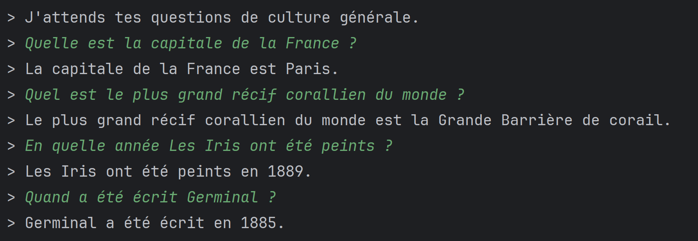
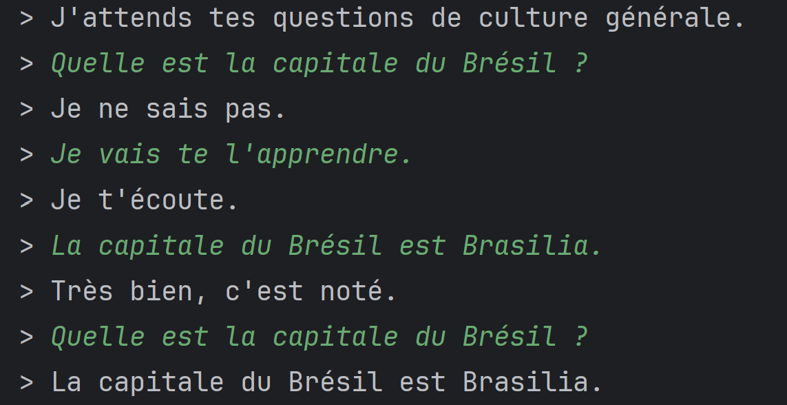

Chatbot
Description
Le projet de cette SAE consiste à développer un chatbot capable de simuler une conversation écrite avec un utilisateur. Ce programme répond à des questions de culture générale en utilisant des réponses stockées dans différents fichiers textes contenant les questions, les réponses et les erreurs de frappe possibles. Le chatbot analyse les questions de l’utilisateur en identifiant les mots importants afin de déterminer le thème et trouver la réponse la plus adaptée dans sa base de données. S’il ne connaît pas la réponse, l’utilisateur peut lui en apprendre une nouvelle, qui sera ajoutée à la base de données pour améliorer ses capacités.


Le chatbot peut également comprendre des questions courtes en se basant sur le contexte de la question précédente. De plus, il utilise un fichier de synonymes (thésaurus) pour reconnaître différentes variantes d’un même mot, ce qui lui permet de mieux interpréter les questions et d’optimiser ses réponses.
Organisation
Pour réaliser ce projet, nous avons travaillé ensemble à toutes les étapes. Nous avons d’abord analysé les objectifs de la SAE ainsi que le code et les fichiers existants afin de comprendre le fonctionnement du chatbot. Ensuite, nous avons développé les différentes méthodes permettant de créer et gérer les index, de construire les réponses candidates et de les intégrer dans la classe Chatbot. La première partie du projet nous a demandé beaucoup de temps, notamment à cause de problèmes de cohérence entre certaines méthodes qui ont nécessité plusieurs phases de débogage. Dans la seconde partie, nous avons amélioré le chatbot en ajoutant la gestion des synonymes, la prise en compte du contexte des questions et la distinction entre certaines informations comme les dates et les lieux. Enfin, nous avons ajouté une fonctionnalité permettant à l’utilisateur d’enseigner de nouvelles réponses au chatbot. Ces connaissances sont désormais enregistrées dans les fichiers afin d’être conservées même après l’arrêt du programme.
Compétences acquises :
Au cours de ce travail, j’ai développé des compétences dans la compréhension plus pousser du fonctionnement d’un Chatbot. J’ai appris à communiquer, à m’organiser en équipe. J’ai appris à programmer en partant seulement d’instruction et à être consciencieuse.
Acces au projets
Conclusion
Nous avons réalisé tout le projet au complet. Ce programme peut alors interagir tout naturellement et au maximum avec l’utilisateur. Cependant, les limites et les problèmes de ce projet reste présent. Premièrement, l’utilisateur est le seul à remplir sa base de données, il peut la fausser. Il rend alors la base de données pourri. D’autre part, notre chatbot interagie selon que quelques formes. Il ne permet pas alors d’être optimal et adapter à chaque utilisateur. Aussi comme tous les chatbots en général, le problème principal est une panne majeure qui est d’analyser l’historique des conversations.